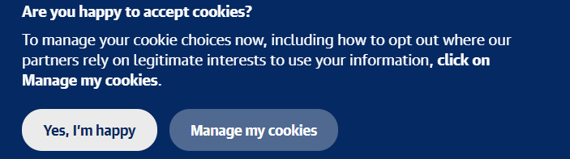
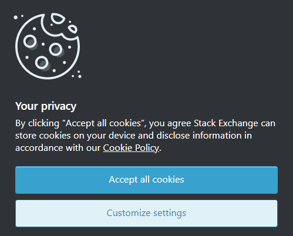
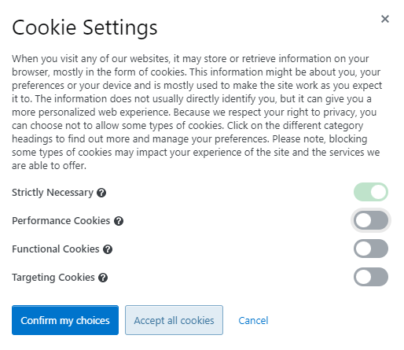

Time for cookies! Sadly, not the edible ones.
So it seems that every online news site, game repository, and even discussion forum is asking if you want to accept or reject their cookies. But what are they? And in the current age of online personas stealing or leaking information, are they safe to accept?
You know your mother always told you to be suspicious of strangers offering you candy...
Image: The Guardian
What are internet cookies, and how do they relate to personal privacy?
- Cookies are strings of text (not code; cookies can't give you viruses) that are stored in your browser
- They are sent to you by websites and are used to remember information about your previous visits
- This information can include things like your login information, recent searches, engagement, and language preferences
- Cookies can 'follow' you across multiple websites if they all use the same cookie
- Some cookies store an anonymous ID that can link them to your device, but not necessarily to you
- Most websites mostly use completely harmless cookies that are necessary for the site to be useful
The quick and dirty answer to why so many websites ask you to accept cookies is this: they are legally required to.
The EU passed the GDPR (General Data Protection Regulation) in May of 2018, which stipulated that end users must consent to their personal data being collected. Cookies, as they contain information about a user's (presumably private-life) activity, is considered personal data under the GDPR. Even for websites based outside the EU, they figured that it was much better to be safe than sorry as other jurisdictions, including the state of California, start to pass similar legislation as well.
Most websites work (or work best) when the user accepts cookies, which is why websites are always trying to get you to accept their cookies. However, most websites offer you the option to opt-out of certain analytics or targeting cookies while keeping essential cookies. StackOverflow spoils you for choice, with eight permutations of allowed cookie categories.
 Image: StackOverflow
You probably won't even have noticed most of the 'strictly necessarily' cookies had the notification not brought it to your attention. For example, I hid an innocuous cookie in the button below.
By cliking this button you automatically consent to receiving cookies from this site. User aaronz13248 on github cannot be held liable for any damages resulting from receiving cookies from this site. No cookies on this site should be legally acessed by third-party websites, except those also created by aaronz13248.